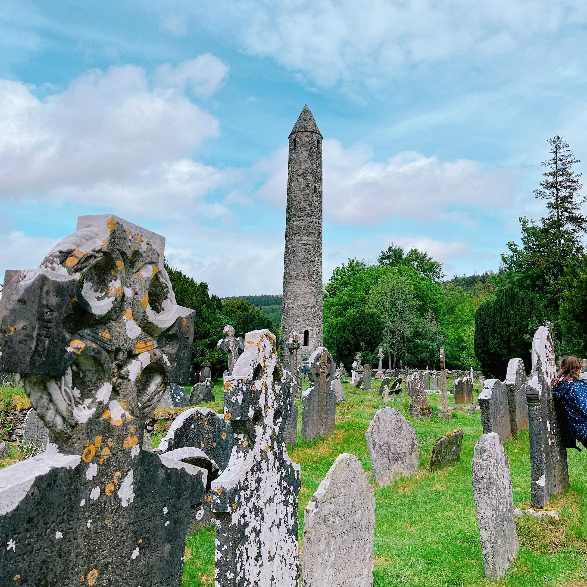
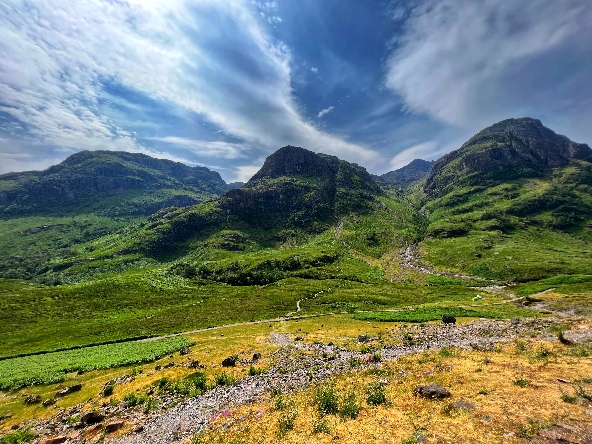

Arrival & planning
This tour starts in Dublin and finishes in Edinburgh, covering a lot of ground along the way. A quick check of your joining details before you travel usually makes Day 1 feel much smoother.
✅ Check your joining details
Your welcome email and official documents confirm your Dublin hotel, Day 1 meeting time and complimentary airport transfer times. Keep those details easy to access before departure and on arrival.
✈️ Arrival plan
- Check your latest airline updates.
- Confirm how you are getting from the airport to the hotel — Trafalgar transfer, private transfer or taxi.
- Private transfer booked? If your arrival time changes, update your transfer provider. If it was booked through Trafalgar, contact European Guest Services using the contact details in your welcome email.
- Trafalgar's Complimentary transfers run at set times and cannot be held. If you miss your transfer, don’t worry — taxis from Dublin Airport are easy to find and the hotel is straightforward to reach.
🛂 Keep essentials accessible
Have your passport, wallet, phone, charger and any medications easy to reach rather than buried in your suitcase.
Know where to be
Your welcome email confirms our Dublin hotel and Day 1 timings. Aim to be in the hotel lobby/reception area for the first group meet-up listed in your welcome email.
🕔 First group meeting
Please be in the hotel lobby/reception area at 4:00 pm, ready to meet your Travel Director.
Before 4:00 pm is usually arrival and settle-in time: check in (or store bags if early), freshen up, and acclimatise at your own pace. Just plan to be back in the lobby on time for our group start.
🏨 Hotel check-in
Check-in is typically after 3:00 PM.
If you arrive earlier, reception can usually store your main luggage until your room is ready, so it helps to keep essentials in a small day bag.
✈️ Airport transfers
Trafalgar offers complimentary Day 1 airport transfers at set times. Please check your joining documents and welcome email for timings and meeting details.
After collecting your luggage, follow signs for Arrivals and enter the main arrivals hall. Your Trafalgar host will normally arrive shortly before departure time. Once you see them, simply introduce yourself and they will guide you from there.
If you have booked a private transfer through Trafalgar, those details are listed separately in your documents. If you are not using those transfers, official taxis from the airport are safe and easy to find.
🧭 Airport meeting points — complimentary transfers only
These photos show the two Trafalgar meeting landmarks inside Dublin Airport arrivals for guests using the complimentary Day 1 transfers.
T1: In the main arrivals hall after customs, look left for ICE Currency Exchange.
T2: In the arrivals hall after customs, look straight ahead for the yellow sculpture.
If you are on a private transfer, please follow the details in your joining documents instead.

On the coach
The coach will be our moving base between destinations. A few simple habits help keep things comfortable, safe and pleasant for everyone travelling together.
- 🔁 Seat rotation happens daily. I will explain the system clearly on Day One.
- 🚻 There is often a WC on board, and we also plan regular comfort stops along the way.
- 🪜 Mobility & boarding: There are steps getting on and off the coach, so please take your time and use the handrail.
- ⛴️ This itinerary includes a ferry crossing, so it helps to keep a layer and anything essential in your day bag rather than packed in your suitcase.
- 🥪 Snacks are absolutely fine. Just try to avoid hot food, hot drinks and anything likely to melt, spill or perfume the entire coach by lunchtime.
- 🎒 Bring a small day bag with what you may need during the day. Main suitcases stay in the coach hold until hotel arrival on travel days.
- 🧳 Carry-on space on the coach is limited. Smaller soft bags such as backpacks or tote-style bags work best overhead or under the seat. Soft day bags are generally much easier and more comfortable on the coach than wheel-based carry-ons.
- 🔔 Seatbelts: For your safety, please ensure your seatbelt is fastened whenever you are seated and keep it on throughout the journey.
- 🧼 Please be mindful of general hygiene. Clean hands and a bit of awareness go a long way in shared spaces. If you’re feeling unwell, just be considerate of others.
What to pack
Most people find they pack more than they actually use. Comfortable, practical and easy to manage tends to win every time on this tour.
Essentials
- 👟 Comfortable walking shoes
- 🧥 Layered clothing for changing conditions
- ☔ A waterproof jacket
- 🎒 A small day bag
- 🔌 A UK Type G plug adapter (three rectangular prongs) View plug type
- 🎧 Optional: wired headphones with a 3.5mm jack to use with our walking-tour audio devices
Packing smarter
- 🧳 Think practical rather than "just in case" — and leave a little room for things you pick up along the way.
- 🌦️ Layers are key — weather can change quickly, and it is not unusual to experience several conditions in one day.
- 💧 Optional: bring a reusable drink bottle, but avoid bulky bottles — collapsible or slim styles are easiest to carry on coach days.
- 💡 Good shoes and a waterproof jacket you trust will do most of the heavy lifting on this tour.
What to expect from the weather
Weather across Ireland and Scotland can shift quickly between regions, coastlines and Highland areas — especially once we reach the Scottish Highlands later in the journey. Forecasts are useful, but flexibility usually matters more than chasing perfect weather.
🌤️ A practical reality
You might get a bit of everything in one day, which is fairly normal here. A couple of flexible layers will usually serve you better than worrying too much about the forecast.
🧭 What usually helps
Treat forecasts as a guide rather than a guarantee, and expect regular changes to the weather and be prepared for four seasons in one day!
🥃 "Today's rain is tomorrow's whisky."
– A local favourite in both Scotland and Ireland
Staying connected on tour
I use WhatsApp for reminders and day-to-day updates while we are travelling. Joining is optional, and it works alongside your official documents and welcome email.
-
1Download WhatsApp before you travel if you do not already use it — either from the link below or directly from your phone’s app store.
💬 Download WhatsApp - 2Set up your profile and verify your number.
- 3Save my number in your phone from the welcome email or with the links above.
- 4Send me a quick WhatsApp message with your name so I know you are set up before the tour begins.
Practical notes
A few practical notes that tend to come up — worth a quick read before you travel.
🚏 The pace of the tour
This is a faster-moving highlights journey across Ireland, Northern Ireland and Scotland — with changing regions, coastlines, a ferry crossing, major cities and Highland scenery all packed into the experience.
Some days involve earlier starts or longer travel stretches than others, but the pace is part of what allows us to experience so much across the two countries in a relatively short space of time.
Once we are underway, most people settle into the rhythm surprisingly quickly.
🚶 Walking
There is a fair amount of walking across this tour — from city streets and castle grounds through to viewpoints, ferry terminals and busy sightseeing days.
Comfortable shoes and a waterproof jacket you trust will do most of the heavy lifting here.
🏨 Hotel styles vary
One night you may be in a modern hotel, the next in a more historic property with a very different layout and character.
That variety is part of the character of travelling through Ireland and Scotland.
🌀 Air conditioning at hotels
Coaches are air conditioned, and many museums, restaurants and public venues will have cooling as well.
That said, hotels across Ireland and Scotland vary quite a bit, and many historic or older properties do not have full air conditioning. If your room feels warm, reception can sometimes provide a fan.
🍽️ Included meals
Breakfast is included daily and some dinners are provided during the tour.
On included meal days, timings are usually coordinated fairly tightly around sightseeing and driving schedules, being punctual helps everything run smoothly for the whole group.
👥 Travelling as a group
Touring as a group works best when everyone is mindful of shared timings — I will make sure things run smoothly from my end.
🧑✈️ Your Driver
Your Driver plays a huge role in keeping the journey safe, smooth and enjoyable throughout the tour.
Driving a journey like this through Ireland and Scotland takes an enormous amount of concentration, organisation and local knowledge — especially on some of the smaller roads and fuller touring days along the way.
💳 Money & payments
- 💳 Cards are widely accepted throughout the UK and Ireland.
- 💷 Carrying a small amount of cash is still useful for smaller purchases and gratuities such as Local Specialists who join us for sightseeing.
- 🏧 ATMs/cash machines are usually the simplest option if you need local currency, as exchange counters outside airports are limited and often charge higher rates or commission.
- ⭐ Optional experiences can be paid by card or cash.
💶 Gratuities
Some gratuities are included in your tour price — restaurant staff and hotel porters, for example. Tips for your Travel Director and Driver are separate unless pre-paid.
If you have pre-paid — thank you, it is genuinely appreciated.
Guidance on appropriate amounts is in your Trafalgar documents — or just ask me on tour.
If you are unsure whether gratuities are pre-paid, check your tour voucher or booking confirmation. It can still help to carry a little cash for day-to-day convenience.
💳 Day-to-day practicalities
- 💷 Ireland uses the Euro (€). Northern Ireland and Scotland use Pounds Sterling (£).
- 🚻 Some public facilities may require coins or small payment, so carrying a little cash can occasionally help.
- 🔒 Keep passports, cards and valuables secure in busy areas and transport hubs.
⭐ Optional experiences
Some of the best memories people take home from this tour come from the optional experiences along the way.
They are designed to complement the itinerary rather than feel separate from it, often adding some of the most memorable local moments of the journey.
Optional experiences are priced separately so people who want them can choose them, while those preferring a quieter moment are not paying for something they may not use.
I will explain what is available once we are underway. There is never any pressure.
Important contact details
Save these before you travel — they are harder to find when you are already on the move.
Damian Watson
Phone / WhatsApp
WhatsApp is usually the easiest way to reach me during the trip.
Questions before the tour?
Before the tour begins I may occasionally be travelling or finishing another tour, but I will always get back to you as soon as I can.
For anything that needs immediate attention before Day 1, please check your welcome email for European Guest Services contact details.

Final note
This tour covers a huge amount of ground in a relatively short time, and that is part of what makes it such a memorable journey. Once we are underway, most people settle into the rhythm surprisingly quickly.
☘️ Safe travels, and see you soon in Dublin.
Want this page offline? Click here to print or save as PDF — or press Cmd+P (Mac) / Ctrl+P (Windows) and choose "Save as PDF". On mobile, use the link.